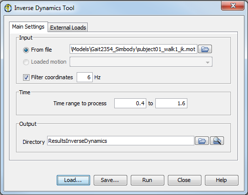
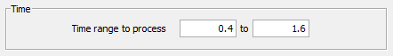
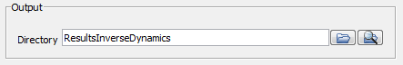
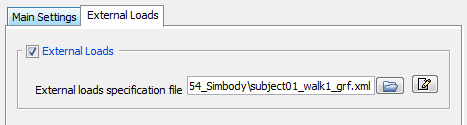
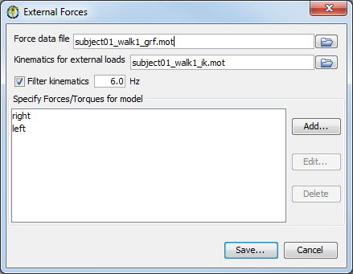
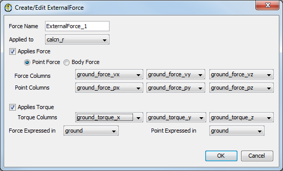

The topics covered in this section include:
The inverse dynamics tool is accessed by selecting Tools → Inverse Dynamics… from the OpenSim main menu bar. Like all tools, the operations performed by the inverse dynamics tool apply to the current model. The name of the current model is shown in bold in the Navigator. See Opening, Closing, and Using the Navigator Window for information on opening models and making a particular model current.
|  | The Inverse Dynamics Tool is controlled by a window with two tabbed panes. The Main Settings pane is used to specify parameters relating to the input kinematics of the current model, the time range for the analysis, and the output of the results. The External Loads pane is used to specify parameters relating to the external loads applied to the model during the analysis.
|
|---|
At the bottom of all the Tool dialog windows are four buttons, located in what we call the Control Panel.
 | - The Load and Save buttons are used to load or save settings for the tool.
- The Run button starts execution.
- The Close button closes the window.
- The Help button takes you to the relevant section of the User Guide.
 | Note that the Close button can be clicked immediately after execution has begun; the execution will complete even though the window has been closed. |
- If you click Load…, you will be presented with a file browser that displays all files ending with the .xml suffix. You may browse for an appropriate settings file (e.g., subject01_Forward_Setup.xml or subject01_Scale_Setup.xml)) and click Open. The tool will then be populated with the settings in that setup file.
- If you have manually entered or modified settings, you may save those settings to a file for future use. If you click Save…, a Save dialog box will come up in which you can specify the name of the settings file. The name you specify for the file should have a suffix of .xml. Click Save to save the settings to file.
After you click Save, you may be presented with another dialog box that asks you whether or not you would like to save some of the settings to separate external files. This can be useful if you would like to reuse those settings for other trials or subjects. Check the boxes of the settings that you'd like to save to external files and specify the names of these files. All of these files should have a suffix of .xml.
|
|---|
Main Settings Pane
The Main Settings pane is used to specify parameters relating to the input kinematics of the current model, the time range for the analysis, and the output of the results. The pane is organized into four main sections entitled Current Model, Input, Time, and Output.
 | - The section for Input displays editable information that allows you to specify the kinematics (e.g., states or motion) describing the movement of a model.
- You may use the
 radio button to select either From file or Loaded motion as the input type. radio button to select either From file or Loaded motion as the input type. - You may use the button to browse for the associated input file.
- If you select the radio button next to Loaded motion, you will need to choose a motion from the drop down list.
|
|  | - The section for Time displays editable information that allows you to specify the start and end time for the inverse dynamics analysis
|
|  | - The section for Output displays editable information that allows you to specify the directory to which the file is saved.
- You may use the button to browse for and specify a directory in which to save the output files.
- You may use the button to open an Explorer window to the specified directory.
|
The External Loads pane is used to specify parameters relating to the external loads applied to the model during inverse dynamic analysis or in other tools (e.g. Forward Dynamics, or Computed Muscle Control, AnalyzeTool etc.). The section for External Loads is optional, and if checked, displays information that allows you to specify the external loads applied to the model and the corresponding kinematics of the external loads if needed. Additionally, there is an option to filter the kinematics for the external loads by selecting the check box next to Filter kinematics and entering the filter frequency.
|  | |
|---|
|  | - The External Forces editor dialog window shown on the left will appear when the editor button is clicked.
- The Force data file specified at the top of this dialog window is a .mot or .sto file containing experimental data. The labels in this file have to be unique so that there's no ambiguity regarding which columns are used to define the forces.
- In case the column labels are not unique, the OpenSim GUI will detect that and offer the option to overwrite or write a new file with unique labels. Earlier versions of OpenSim allowed for duplicate column names but this behavior has been deprecated.
- Next, you can specify the Kinematics for external loads file. In general, you should leave this blank. OpenSim will then use the specified kinematics that are being tracked by ID, RRA, and CMC (e.g. for ID for RRA it would be IK kinematics, and for CMC it would be RRA kinematics).
- Next, specify filtering options.
- Next, specify any forces and torques that are applied to the model:
- You can select any of the listed forces and/or torques for editing or deletion by choosing it and then clicking on the Edit… or Delete buttons, respectively.
- Click on the Add… button to add a new force and/or torque to the list.
- Choosing the Add… button opens the dialog window (Create/Edit ExternalForce) shown in the figure below.
- You must select Save… after you define your forces in order to write them to the XML file that will be used by the tool.
|
|  | Within the Create/Edit ExternalForce window, you can define either a Point Force or a Body Force. - A point force (most commonly used) is a force applied at a specified point and an optional torque. Using the drop down menu at the bottom of the window, you can specify the reference frames that the point and the force are expressed in.
- A body force is a force applied to the origin of the body frame (not necessarily the CoM) and a required torque, for a total of six components. By definition, a torque is a rotational "force" or moment so the point of application does not need to be specified. Thus for a body force, you should check applies force and applies torque. The selections in "Point Columns", "Force Expressed In", and "Point Expressed In" will be ignored.
The drop-down menus for Force Columns, Point Columns, and Torque Columns allow you to specify which of the columns in the Force Data file are to be used to define the ExternalForce. Columns in the Force data file corresponding to the same force are assumed to live in adjacent columns and to have a common prefix that's used as an identifier for the corresponding ExternalForce. This common prefix is stored in the xml file as a "force_identifier", similar rules apply for the "point_identifier" in case a point needs to be specified and "torque_identifier" for the case when a torque is also applied. Other attributes of the ExternalForce are: - applied_to_body: specifies the name of the body that the ExternalForce is applied to.
- Force Expressed In: specifies the frame in which the force is expressed (e.g. Force plate data is usually measured in lab/ground frame)
- Point Expressed In: specifies the frame in which the point is expressed
|
The Inverse Dynamics Tool is run using the command analyze -S <setup file name>, for example,
id -S subject01_Setup_InverseDynamics.xml
{kind=link}
{kind=link}
{kind=link}
{kind=link}
{kind=link}
{kind=link}
{kind=link}